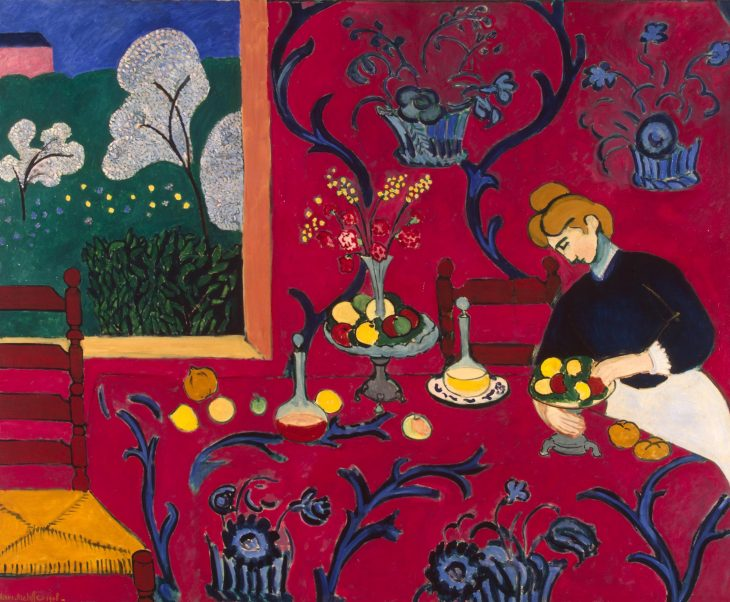
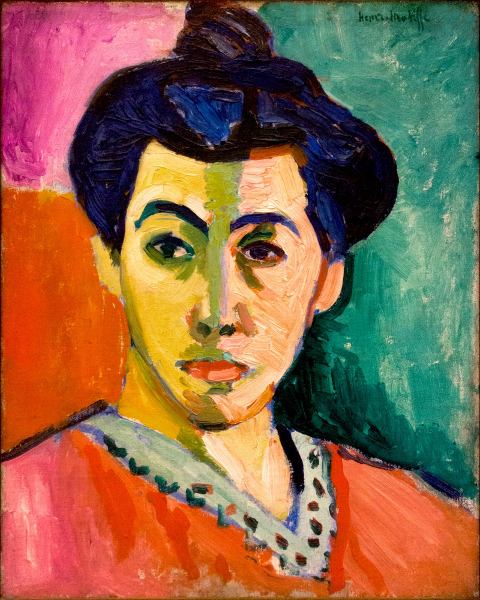
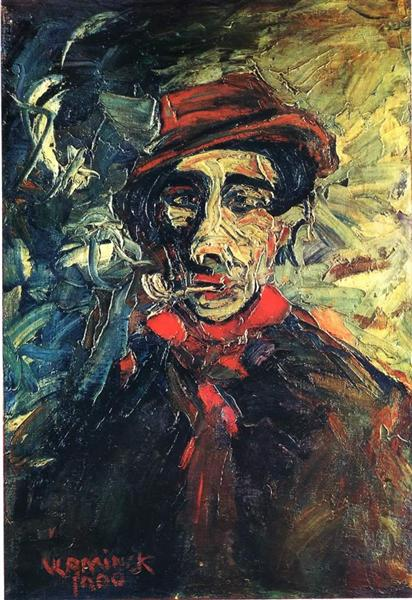
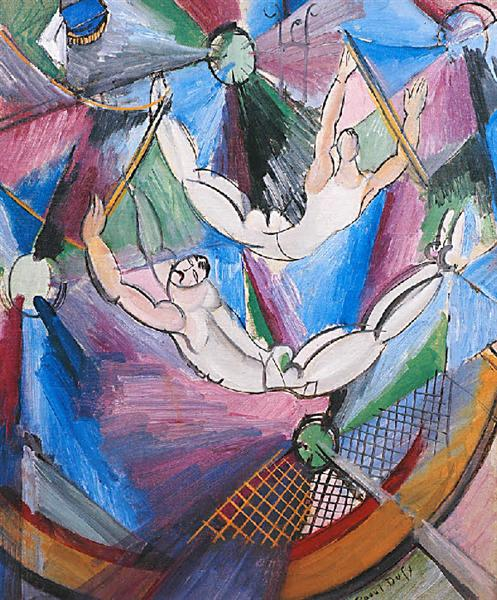
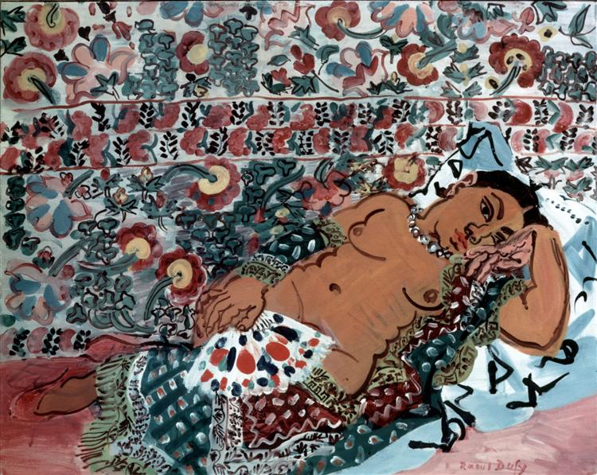

Obras del Fauvismo
Henri Matisse
La Habitacion Roja
Armonía en rojo o La habitación roja es un óleo del artista Henri Matisse (1869-1954) de 1908. Se trata de una obra de grandes dimensiones –180'5 x 221– cm, y fue pintada por encargo del millonario ruso Sergei Shukin, coleccionista de la obra del pintor. Al parecer, Matisse pintó todo el fondo de color azul claro (como aún puede verse en los bordes), pero finalmente lo sobre-pintó de rojo intenso. Un año después Matisse pintaría Bodegón con mantel azul, que pudiera dar una idea aproximada de cómo era La habitación roja en su origen.
Se representa un comedor donde una mujer está poniendo la mesa, al fondo, a la izquierda, una ventana muestra «unos árbol blancos, un seto, florecillas y una casita a lo lejos». Matisse, siguiendo la tendencia subjetivista de los «fauves», hace un uso subjetivo del color, el pelo de la mujer es naranja y el rojo domina en la composición (de este modo el colorido domina los planos compositivos). Ni la mesa ni la mujer presentan cualquier tipo de modelado, las formas son planas y completamente bidimensionales. El dibujo remarcado con líneas negras y los colores planos recuerdan características de la pintura románica. La línea recta de la mesa transmite serenidad mientras que las formas curvas de la decoración en roleos transmiten sensualidad. La pincelada cargada y uniforme se impregna de colores son puros y primarios, reservando los secundarios para los detalles de hecho, siguiendo el gusto detallista de Matisse. Algunos analistas lo han catalogado como bodegón.
La Danza
La Danza es un cuadro de Henri Matisse expuesto en el Museo del Hermitage de San Petersburgo, Rusia. Está pintado al óleo sobre lienzo y mide 260 cm de alto por 389 cm de ancho. Se representa en esta obra a un grupo de cinco personas, de ambos sexos, que bailan en círculo, dándose la mano. Están desnudos, tema artístico que interesó a Matisse durante toda su vida.
La Danza refleja la incipiente fascinación de Matisse por el arte primitivo: los intensos colores cálidos contra el frío verde azulado del fondo -claramente relacionados con el fauvismo- y la rítmica sucesión de desnudos danzantes transmiten los sentimientos de liberación emocional y hedonismo. A este colorido se le ha dado una interpretación simbólica: los cuerpos se pintan de rojo y representan la vida, el azul es el cielo y el verde la naturaleza, logrando de este modo un movimiento extraordinario. El cuadro a menudo se relaciona con la «Danza de las Jóvenes» del famoso ballet con música de Ígor Stravinski y coreografía de Vaslav Nizhinski, La consagración de la primavera. De hecho, el sentimiento de grupo que comparten tanto el cuadro como la obra de Stravinsky es una parte más de ese sentido tribal al que ambas estéticas se querían aproximar. Sin embargo, esta relación es conceptual, realizada por críticos o estudiosos posteriores, ya que La consagración de la primavera es cuatro años posterior a la pintura de Matisse.

La Raya Verde
La raya verde (La Raie verte) –también llamado Madame Matisse– es un óleo del pintor francés Henri Matisse. Matisse pintó este retrato en 1905, usando como modelo a su mujer, Amélie Noellie Matisse-Parayre. Es una pintura de una gran audacia cromática, que rompe con la representación realista de las formas, la luz y la perspectiva, supeditando todo a la potencia expresiva del color. Este lienzo fue exhibido durante el Salón de Otoño de 1905, junto a obras de otros pintores como André Derain, Albert Marquet o Maurice de Vlaminck. A la postre, los integrantes de aquella exposición serían bautizados como Les fauves ("las fieras") por su uso estridente del color y la distorsión de las formas. Se conserva en la Galería Nacional de Dinamarca, en Copenhague.
Maurice de Vlaminck
En el Bar
El pintor pinta una caricatura satírica de una dama sentada en un bar como una forma de exponer el tema del vicio, el alcoholismo y la delincuencia en la sociedad capitalista. Podría estar influenciado por la representación de Toulouse-Lautrec de prostitutas y bebedores solitarios, sin embargo, afirmó que no había sido su objetivo transmitir la disciplina científica de la modelo. Aunque la dama está mirando al espectador, su mirada está en blanco, indiferente. En lugar de evitar hacer un retrato psicológico, el pintor ha logrado disponer a la dama, junto con su mirada insulsa, un rasgo descarnado y trágico. El cabello desordenado de la mujer y las prendas gastadas sugieren que es un elemento de la clase. Su nariz de color rojo cereza es una abreviatura visual del alcoholismo, que se enfatiza con el vaso rojo de gran tamaño en la barra. La destreza aproximada y la unidad de área de modelado rudimentario incluso implican la percepción del artista de su tema, ya que son descriptivos de su aspecto real. El creador compensa el estado de ánimo deprimente de la pintura burlándose un tanto lascivamente de los senos descomunales de la modelo para representar los dos últimos ceros en el año en que se completó, 1900. Los colores espeluznantes de la figura se distinguen claramente del fondo oscuro en el que una lámpara parece proporcionar muy poca protección contra los peligros de la noche.

Retrato de Derain
No encontramos una descripcion concreta de la obra

Hombre Fumando Pipa
No encontramos una descripcion concreta de la obra
Andre Derain
Paisaje cerca de Chatou
Este paisaje de 1904 representa el período fauvista más fructífero de Derain, en el cual el juego de intensos colores se combina con una serie de expresivas y aparentemente espontáneas pinceladas que nos provocan un deleite visual sin igual. Derain intensificó los matices para que los colores se manifestaran en toda su plenitud, a la vez que sus combinaciones acrecientan su luminosidad, ensalzando las formas carentes de perspectiva. El campo se muestra plagado de efectos lumínicos y de ahí su encantadora cualidad vital que revitaliza el tema, que vibra con una luz propia e intensa, alejándose de la luz natural para penetrar en el mundo de la luz intrínseca de las cosas.

Barcas en el Puerto de Collioure
Este lienzo pintado con la técnica del óleo lo realizó el artista André Derain en el año 1905, y en la actualidad la obra está en posesión de la Royal Academy of Arte de Londres. Se trata de una obra de formato más bien pequeño (38 x 46 cm) realizado en el propio pueblo francés de Collioure, una población mediterránea, prácticamente vecina a la frontera entre el país galo y España. Hasta allí llegó Derain para veranear en 1905 invitado por su amigo Henri Matisse, quién también nos ha legado varias obras inspiradas en esa localidad costera.
Rápidamente, Derain quedó enamorado de la luz de Collioure y pintaban ambos juntos, por lo que la influencia de Matisse se nota en las obras de Derain. De él tomó el uso de una paleta de colores muy saturados y brillantes, como vemos en esta obra de Barcas en el puerto de Collioure. Pero no se trata de un estilo en el que solo juega un importante papel el color, característica propia del Fauvismo, sino que además Derain plasma con ello las sensaciones que le transmiten esos paisajes. A partir del uso de llamativas y fuertes tonalidades, nos presenta la pequeña playa de esta población en un rojo muy intenso, lo que comunica de forma inmediata el calor de esta costa y la fuerza del sol del verano. Algo realmente sorprendente, ya que la representación más habitual de una playa se había hecho siempre basándose en los colores amarillos y cremas. Y en cuanto al colorido de las barcas, les aplica igualmente manchas de color muy vivo, lo que no quiere decir que las barcas de Collioure fueran realmente así, sino que de ese modo las veía Derain. Para entender estos juegos cromáticos hay que conocer el pensamiento del artista, quién en una ocasión dijo: “La sombra es todo un mundo de claridad y luminosidad, que contrasta con la luz del sol; esto se conoce como reflejos”. Al contemplar esta obra cualquier espectador experimenta contrastes de carácter simultáneo. Los valores de color van cambiando en función de los tonos que se tienen más próximos. A modo de ejemplo, se puede apreciar que los amarillos son mucho más brillantes cuando están junto al azul que cuando aparecen pegados a los tonos rojos. Toda la escena está bañada por la fuerza de la luz del sol, que cae a plomo sobre el mar, la playa y las montañas del fondo que marcan el horizonte. El verde frío del agua contrasta con la potencia roja de la playa, y en el lateral izquierdo vemos las barcas que reflejan el sol con un amarillo saturado. Hay detalles muy interesantes para ver el estudio de los colores que representan estos primeros años de la pintura fauvista. Por ejemplo la barca del primer plano proyecta una sombra en azul oscuro y también verde para contrastar como color complementario al de la playa. O en el caso de la figura que está de pie en el lateral derecho la ha silueteado con una línea azul. No es el dibujo de esa figura humana sino un elemento que sirve para realzar la luminosidad.

Curva en el camino
Derain, ese hijo de un pastelero que abandonó la ingeniería por el arte, pasaba las vacaciones en L’Estaque con sus amigotes fauvistas (también el papá Cézanne había veraneado ahí años antes) y representa perfectamente la sensación de libertad, sol y juerga que debieron pasar ahí estos modernos, los primeros vanguardistas franceses, que a base de colores intensos y mandando a tomar por el culo toda noción de volumen, sombra o tono, quisieron más expresar que describir. Con color puro y duro, el pintor transmite energía, vibración y felicidad. Un paisaje moderno (o quizás primitivo, que en esa época era lo mismo), un lugar soleado, optimista, acorde con la nueva idea de modernidad: una utopía realizable a través de fórmulas que los vanguardistas, cada uno a su manera, divulgaron con los más rompedores manifiestos.

Raoul Dofy
Bañistas
No encontramos una descripcion concreta de la obra

Acrobatas
No encontramos una descripcion concreta de la obra
Mujer India
No encontramos una descripcion concreta de la obra
Georges Henri Rouault
El Payaso
No encontramos una descripcion concreta sobre la obra

Payaso tragico
No encontramos una descripcion concreta sobre la obra

Sacrificio
No encontramos una descripcion concreta sobre la obra